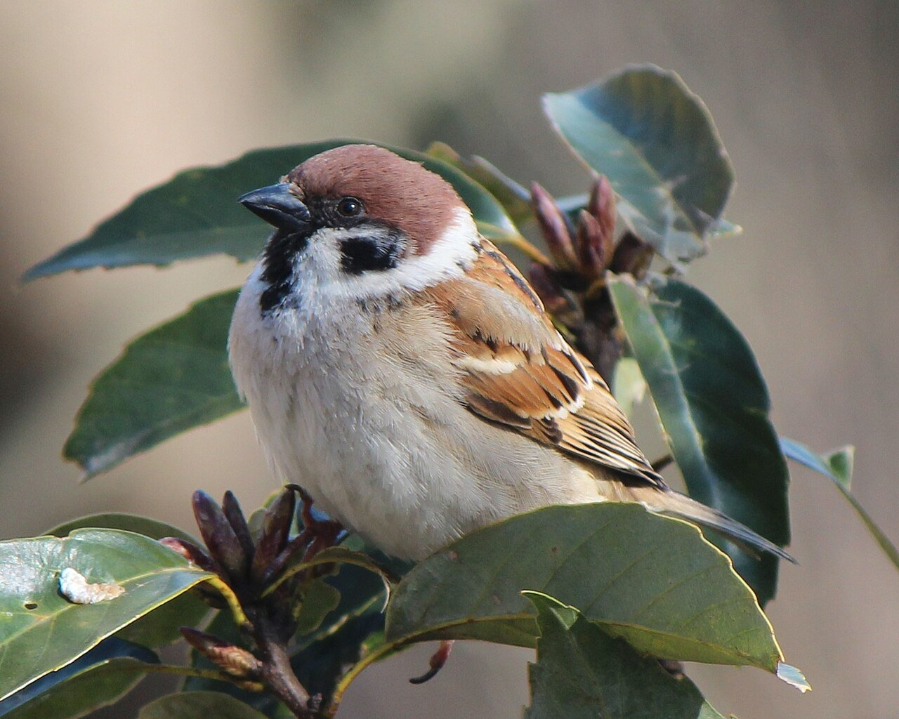

和土地好好相處
種一碗好米，需要做哪些事？

好水、好土
瑞田村位在濁水溪與清水溝溪的合流處，是鹿谷唯一的一片平原。
引來源頭的清水，配上肥沃的黑土，稻子就有了好的開始。
翻翻看：農場的四個用心
【待查證】提案寫「零農藥化肥」「友善石虎農作認證」。目前公開報導只提到「石虎友善農作田埂」，請向農場確認後再寫進網站。

為什麼不用毒鳥？
麻雀愛吃稻穀，是農人的頭痛問題。
但用毒餌，連吃了麻雀的其他動物也可能受害。農場選擇用棉線「嚇」走麻雀，多花很多工，換來田裡更多生命。
請放一張農場防鳥線的實拍照片（取得同意）。
你知道里山是什麼嗎？
里山，是人住的地方和自然交界的那一帶。有田地、樹林、河水，人與動植物共用同一片土地。